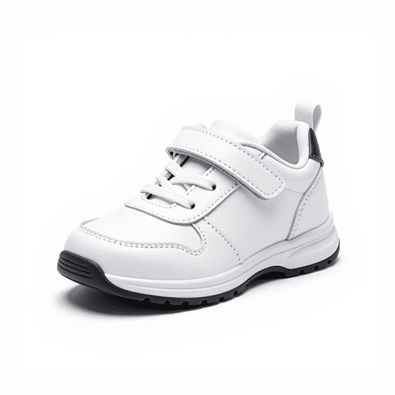

0. Что мы делаем и зачем
В задании 2 вы пишете первое окно программы — каталог обуви. Оно берёт данные из базы (задание 1), считает цену со скидкой и рисует карточки. Вход и заказы — задания 3 и 4.
Результат (красная карточка — товара ≤ 3 пар; «заглушка» — когда фото нет):

Категория: Детская обувь
Состав: экокожа, хлопок
Остаток: много
Категория: Детская обувь
Состав: экокожа, хлопок
Остаток: мало
img.1. Простые слова
| Слово | По-человечески |
|---|---|
| Solution / Project | «Папка» всей программы / одна программа внутри |
| Форма (Form) | Окно программы |
| Control | Кнопка, надпись, картинка, поле на форме |
| Класс | Файл с кодом, описывающий «вещь» (товар, подключение) |
| Свойство | Настройка элемента (Text, BackColor) |
| Строка подключения | Адрес БД: на каком сервере и как называется |
2. Что требует задание
- В названии приложения — «Чудо Обувь».
- Calibri; фон #FFFFFF; доп. фон #D2F6E7; акцент #70B2AF; логотип; иконка; заголовок окна.
- Карточка: картинка, категория, наименование, производство, состав, цена со скидкой, «много/мало».
- Нет фото —
picture.png. Остаток ≤ 3 — фон #ff8080. - Скидка 25%, если заказов в прошлом месяце не было.
- CamelCase, одна команда в строке, без аварийных завершений.
3. Создание проекта
Запуск
Тип проекта
Windows Forms → Windows Forms App (.NET Framework), язык C# → Next.Имя
ChudoObuvOrdersПанели
Пустое окно Form1 — ваша форма. Справа Solution Explorer (файлы). Нет панелей? View → Solution Explorer, View → Toolbox, свойства — F4.
Библиотека для App.config
4. Ресурсы
Папки
Resources; внутри ещё Images.Файлы
Чудо Обувь.ico, Чудо Обувь.png, picture.png. В Images — все картинки товаров.Copy if newer
Иконка программы
Чудо Обувь.ico.5. Стиль формы мышкой (без кода)
Всё, что нужно по стилю, настраивается в окне Properties (F4). Жёлтым в макете отмечены строки, которые вы меняете.
Цвет фона
255, 255, 255 → Enter.210, 246, 231, для #70B2AF — 112, 178, 175, для #FF8080 — 255, 128, 128. Это те же цвета, только в десятичной записи.Шрифт
Заголовок окна
Чудо Обувь — Каталог обуви.Иконка окна
Чудо Обувь.ico → Открыть.Логотип
Чудо Обувь.png → OK. Затем SizeMode = Zoom.Размещение
Повторить на других формах
6. Подключение БД мышкой (мастер)
Visual Studio умеет сама создать строку подключения и записать её в App.config. Руками ничего вписывать не надо.
Узнать имя сервера
ПК\SQLEXPRESS). Запомните его.Открыть мастер
Окно подключения
Чудо_Обувь → Test Connection (должно появиться «Test connection succeeded») → OK.Сохранить в App.config
ChudoObuvOrders.Properties.Settings.ConnectionString) → Next.Выбрать таблицы
Проверка
connectionStrings. Если нет — вернитесь к шагу 2.7. Служебные файлы с кодом
Эти файлы без внешнего вида — только логика. Каждый создаётся одинаково:
Db.cs) → Add → Ctrl+A в открывшемся файле → вставьте код. Program.cs уже есть — замените в нём всё.Db.cs — работа с базой данных
using System.Configuration;
using System.Data;
using System.Data.SqlClient;
// Всё общение с базой данных — в этом классе.
public static class Db
{
// Строку подключения создаёт мастер Visual Studio (раздел 6а) в App.config.
static string cs = ConfigurationManager
.ConnectionStrings["ChudoObuvOrders.Properties.Settings.ConnectionString"].ConnectionString;
// Команда с параметрами: пары "имя", значение, "имя", значение...
public static SqlCommand Cmd(SqlConnection c, string sql, object[] p, SqlTransaction t = null)
{
var m = new SqlCommand(sql, c, t);
for (int i = 0; i < p.Length; i += 2)
m.Parameters.AddWithValue((string)p[i], p[i + 1]);
return m;
}
// SELECT: вернуть таблицу.
public static DataTable Table(string sql, params object[] p)
{
using (var c = new SqlConnection(cs))
{
var t = new DataTable();
new SqlDataAdapter(Cmd(c, sql, p)).Fill(t);
return t;
}
}
// INSERT / UPDATE / DELETE.
public static void Run(string sql, params object[] p)
{
using (var c = new SqlConnection(cs))
{
c.Open();
Cmd(c, sql, p).ExecuteNonQuery();
}
}
// Открытое подключение — для транзакций.
public static SqlConnection Open()
{
var c = new SqlConnection(cs);
c.Open();
return c;
}
}
Session.cs — кто вошёл и корзина
using System.ComponentModel;
// Одна строка корзины.
public class CartLine
{
public int StockItemId { get; set; }
public string Name { get; set; }
public decimal Size { get; set; }
public int Qty { get; set; }
public decimal Price { get; set; }
}
// Кто сейчас вошёл и что лежит в корзине.
public static class Session
{
public static int UserId;
public static string FullName = "";
public static string Role = "";
public static bool LoggedOut;
public static BindingList<CartLine> Cart = new BindingList<CartLine>();
public static bool IsAuth { get { return UserId > 0; } }
public static bool IsAdmin { get { return Role.StartsWith("Админ"); } }
public static bool IsStaff { get { return IsAdmin || Role.StartsWith("Менед"); } }
public static void Clear()
{
UserId = 0; FullName = ""; Role = "";
Cart.Clear();
}
}
Program.cs — запуск: вход → каталог
using System;
using System.Windows.Forms;
static class Program
{
[STAThread]
static void Main()
{
Application.EnableVisualStyles();
while (true)
{
// 1) окно входа; закрыли крестиком — выходим
using (var login = new LoginForm())
if (login.ShowDialog() != DialogResult.OK) break;
// 2) главное окно; если нажали «Выйти» — снова вход
Session.LoggedOut = false;
using (var main = new MainForm())
main.ShowDialog();
if (!Session.LoggedOut) break;
}
}
}
Form1.cs, созданный студией, удалите: Solution Explorer → правой по нему → Delete.8. Окно каталога и карточка — мышкой
Сначала создайте карточку (ProductCard), потом окно (MainForm) — тогда карточка появится в Toolbox.
Карточка товара (User Control) ProductCard
ProductCard → Add. Щёлкните по пустому месту контрола → F4:| Свойство формы | Значение |
|---|---|
| ClientSize | 880, 90 |
| Font | Calibri, 10pt (кнопка …) |
Теперь из Toolbox перетаскивайте элементы и в Properties (F4) меняйте перечисленные строки. Положение и размер можно просто задать мышью — цифры ориентировочные.
| № | Элемент Toolbox | (Name) | Что поменять в Properties |
|---|---|---|---|
| 1 | Panel | pnlRoot | Dock = Fill · BorderStyle = FixedSingle · Cursor = Hand · BackColor = 255, 255, 255 |
| 2 | PictureBox | picImage | (перетащить внутрь pnlRoot) Location = 5, 5 · Size = 80, 78 · SizeMode = Zoom |
| 3 | Label | lblInfo | (перетащить внутрь pnlRoot) Location = 95, 8 · Size = 660, 75 |
| 4 | Label | lblPrice | (перетащить внутрь pnlRoot) Location = 760, 8 · Size = 110, 75 |
События (в Properties нажмите ⚡, найдите событие и дважды щёлкните справа от него — студия создаст метод и откроет код; для кнопок достаточно двойного щелчка по самой кнопке):
| Элемент | Событие | Метод |
|---|---|---|
pnlRoot | Click | Card_Click |
picImage | Click | Card_Click |
lblInfo | Click | Card_Click |
lblPrice | Click | Card_Click |
Card_Click: создайте его у первого, а у остальных в списке справа от события Click выберите уже готовый Card_Click.Главное окно — каталог MainForm
MainForm → Add. Щёлкните по пустому месту окна → F4 и задайте свойства формы:| Свойство формы | Значение |
|---|---|
| Text | Чудо Обувь — Каталог |
| ClientSize | 944, 611 |
| Font | Calibri, 10pt (кнопка …) |
| BackColor | 255, 255, 255 |
| StartPosition | CenterScreen |
Теперь из Toolbox перетаскивайте элементы и в Properties (F4) меняйте перечисленные строки. Положение и размер можно просто задать мышью — цифры ориентировочные.
| № | Элемент Toolbox | (Name) | Что поменять в Properties |
|---|---|---|---|
| 1 | TextBox | txtSearch | Location = 10, 10 · Size = 160, 23 |
| 2 | ComboBox | cmbSort | Location = 180, 10 · Size = 130, 23 · DropDownStyle = DropDownList · Items = кнопка … → строки: Без сортировки; Цена ↑; Цена ↓ |
| 3 | ComboBox | cmbCat | Location = 320, 10 · Size = 150, 23 · DropDownStyle = DropDownList |
| 4 | Button | btnCart | Text = Корзина (0) · Location = 480, 8 · Size = 90, 28 |
| 5 | Button | btnOrders | Text = Заказы · Location = 575, 8 · Size = 80, 28 |
| 6 | Button | btnExit | Text = Выйти · Location = 660, 8 · Size = 70, 28 |
| 7 | Label | lblUser | Text = Гость · AutoSize = True · Location = 740, 13 |
| 8 | FlowLayoutPanel | pnlCatalog | Location = 0, 45 · Size = 944, 566 · AutoScroll = True · BackColor = 210, 246, 231 · Anchor = Top, Bottom, Left, Right |
События (в Properties нажмите ⚡, найдите событие и дважды щёлкните справа от него — студия создаст метод и откроет код; для кнопок достаточно двойного щелчка по самой кнопке):
| Элемент | Событие | Метод |
|---|---|---|
txtSearch | TextChanged | txtSearch_TextChanged |
cmbSort | SelectedIndexChanged | cmbSort_SelectedIndexChanged |
cmbCat | SelectedIndexChanged | cmbCat_SelectedIndexChanged |
btnCart | Click | btnCart_Click |
btnOrders | Click | btnOrders_Click |
btnExit | Click | btnExit_Click |
ProductCard появятся на панели только после того, как вы создадите контрол (раздел «Карточка») и соберёте проект: Build → Build Solution.9. Код каталога
Откройте файл (правой по форме → View Code или F7), Ctrl+A, вставьте. Внешний вид в этих файлах не задаётся — он настроен мышкой.
ProductCard.cs
using System;
using System.Data;
using System.Drawing;
using System.IO;
using System.Windows.Forms;
// Карточка товара в каталоге (User Control). Вид — в Designer, здесь — заполнение данными.
public partial class ProductCard : UserControl
{
public event Action<DataRow> Clicked;
DataRow row;
public ProductCard() { InitializeComponent(); }
public void Bind(DataRow r)
{
row = r;
int qty = (int)r["Qty"];
// Мало на складе (3 и меньше) — красный фон.
pnlRoot.BackColor = qty <= 3 ? Color.FromArgb(255, 128, 128) : Color.White;
lblInfo.Text = r["Manufacturer"] + " | " + r["ProductName"] + "\n" + r["CategoryName"] + "\nСостав: " + r["Composition"];
lblPrice.Text = ((decimal)r["Price"]).ToString("N0") + " ₽\n" + (qty > 5 ? "много" : "мало");
picImage.Image = LoadImage(r["ImageFileName"] as string);
}
// Нет картинки (пусто или файла нет) — берём заглушку picture.png.
public static Image LoadImage(string fileName)
{
string path = Path.Combine(Application.StartupPath, "Resources", "Images", fileName ?? "");
if (!File.Exists(path)) path = Path.Combine(Application.StartupPath, "Resources", "picture.png");
return Image.FromFile(path);
}
// Один обработчик Click на панель, картинку и обе надписи.
private void Card_Click(object sender, EventArgs e)
{
if (Clicked != null) Clicked(row);
}
}
MainForm.cs
using System;
using System.Data;
using System.Windows.Forms;
// Каталог: поиск, фильтр, сортировка, карточки. Вид окна — в MainForm.Designer.cs.
public partial class MainForm : Form
{
bool ready = false; // пока окно строится, каталог не перечитываем
bool pick; // true — каталог открыт из «Заказов» для добавления заказа
public MainForm(bool pick = false)
{
InitializeComponent();
this.pick = pick;
cmbCat.DisplayMember = "CategoryName";
cmbCat.ValueMember = "CategoryId";
cmbCat.DataSource = Db.Table("SELECT 0 AS CategoryId, N'Все категории' AS CategoryName UNION ALL SELECT Код_категории, Название_категории FROM Категории");
cmbSort.SelectedIndex = 0;
// Права: гость не ищет и не фильтрует; «Заказы» — менеджер/админ.
txtSearch.Visible = cmbSort.Visible = cmbCat.Visible = btnCart.Visible = Session.IsAuth;
btnOrders.Visible = Session.IsStaff;
lblUser.Text = Session.IsAuth ? Session.FullName : "Гость";
if (pick) { btnOrders.Visible = false; btnExit.Text = "Назад"; }
ready = true;
LoadCatalog();
}
// Поиск, сортировка, фильтр — любое изменение перерисовывает каталог.
private void txtSearch_TextChanged(object sender, EventArgs e) { LoadCatalog(); }
private void cmbSort_SelectedIndexChanged(object sender, EventArgs e) { LoadCatalog(); }
private void cmbCat_SelectedIndexChanged(object sender, EventArgs e) { LoadCatalog(); }
private void btnCart_Click(object sender, EventArgs e) { new CartForm().ShowDialog(); LoadCatalog(); }
private void btnOrders_Click(object sender, EventArgs e) { new OrdersForm().ShowDialog(); LoadCatalog(); }
private void btnExit_Click(object sender, EventArgs e)
{
if (!pick) // «Выйти» — на экран входа; «Назад» просто закрывает окно
{
Session.Clear();
Session.LoggedOut = true;
}
Close();
}
void LoadCatalog()
{
if (!ready) return;
// Прошлый месяц: с 1-го числа прошлого месяца до 1-го числа этого (не включая).
var thisMonth = new DateTime(DateTime.Today.Year, DateTime.Today.Month, 1);
string order = cmbSort.SelectedIndex == 1 ? "ORDER BY Price ASC"
: cmbSort.SelectedIndex == 2 ? "ORDER BY Price DESC" : "ORDER BY p.Код_товара";
// Цена: заказывали в прошлом месяце — базовая, иначе минус 25%.
var t = Db.Table(@"SELECT p.Код_товара AS ProductId, p.Наименование AS ProductName, p.Производство AS Manufacturer, p.Состав AS Composition,
p.Описание AS Description, p.Изображение AS ImageFileName, c.Название_категории AS CategoryName,
ISNULL((SELECT SUM(Количество) FROM Товарные_позиции WHERE Код_товара = p.Код_товара), 0) AS Qty,
CASE WHEN EXISTS (SELECT 1 FROM Строки_заказов oi
JOIN Заказы o ON o.Код_заказа = oi.Код_заказа
JOIN Товарные_позиции si ON si.Код_позиции = oi.Код_позиции
WHERE si.Код_товара = p.Код_товара AND o.Дата_заказа >= @a AND o.Дата_заказа < @b)
THEN p.Цена ELSE ROUND(p.Цена * 0.75, 2) END AS Price
FROM Товары p JOIN Категории c ON c.Код_категории = p.Код_категории
WHERE (p.Наименование LIKE @s OR p.Описание LIKE @s)
AND (@cat = 0 OR p.Код_категории = @cat) " + order,
"@a", thisMonth.AddMonths(-1), "@b", thisMonth,
"@s", "%" + txtSearch.Text + "%", "@cat", Session.IsAuth ? (int)cmbCat.SelectedValue : 0);
pnlCatalog.Controls.Clear();
foreach (DataRow r in t.Rows)
{
var card = new ProductCard();
card.Bind(r);
card.Clicked += OpenProduct;
pnlCatalog.Controls.Add(card);
}
btnCart.Text = "Корзина (" + Session.Cart.Count + ")";
}
void OpenProduct(DataRow r)
{
new ProductForm(r).ShowDialog();
LoadCatalog();
}
}
10. Скидка — как она считается
Скидка считается в запросе из LoadCatalog (MainForm.cs): заказывали в прошлом месяце — цена базовая, иначе минус 25%.
var thisMonth = new DateTime(DateTime.Today.Year, DateTime.Today.Month, 1);
string order = cmbSort.SelectedIndex == 1 ? "ORDER BY Price ASC"
: cmbSort.SelectedIndex == 2 ? "ORDER BY Price DESC" : "ORDER BY p.Код_товара";
// Цена: заказывали в прошлом месяце — базовая, иначе минус 25%.
var t = Db.Table(@"SELECT p.Код_товара AS ProductId, p.Наименование AS ProductName, p.Производство AS Manufacturer, p.Состав AS Composition,
p.Описание AS Description, p.Изображение AS ImageFileName, c.Название_категории AS CategoryName,
ISNULL((SELECT SUM(Количество) FROM Товарные_позиции WHERE Код_товара = p.Код_товара), 0) AS Qty,
CASE WHEN EXISTS (SELECT 1 FROM Строки_заказов oi
JOIN Заказы o ON o.Код_заказа = oi.Код_заказа
JOIN Товарные_позиции si ON si.Код_позиции = oi.Код_позиции
WHERE si.Код_товара = p.Код_товара AND o.Дата_заказа >= @a AND o.Дата_заказа < @b)
THEN p.Цена ELSE ROUND(p.Цена * 0.75, 2) END AS Price
FROM Товары p JOIN Категории c ON c.Код_категории = p.Код_категории
WHERE (p.Наименование LIKE @s OR p.Описание LIKE @s)
AND (@cat = 0 OR p.Код_категории = @cat) " + order,
"@a", thisMonth.AddMonths(-1), "@b", thisMonth,
"@s", "%" + txtSearch.Text + "%", "@cat", Session.IsAuth ? (int)cmbCat.SelectedValue : 0);
thisMonth— первое число текущего месяца;AddMonths(-1)— первое число прошлого.- Прошлый месяц:
>=начало прошлого и<начало текущего. CASE WHEN EXISTS (…)— «был ли товар в заказах за этот период».
11. Запуск и проверка
| Проверка | Ожидание |
|---|---|
| Заголовок, иконка | «Чудо Обувь — …» |
| Логотип | Не растянут |
| Нет фото | picture.png |
| Остаток ≤ 3 | Красная карточка |
| Остаток 4–5 / > 5 | «мало» / «много» |
12. Чек-лист
- ☐ Ресурсы + Copy if newer
- ☐ Иконка, заголовок «Чудо Обувь»
- ☐ Calibri, #FFFFFF / #D2F6E7 / #70B2AF
- ☐ Скидка 25% по прошлому месяцу
- ☐ «много» > 5, подсветка ≤ 3, заглушка
- ☐ Запуск без вылетов